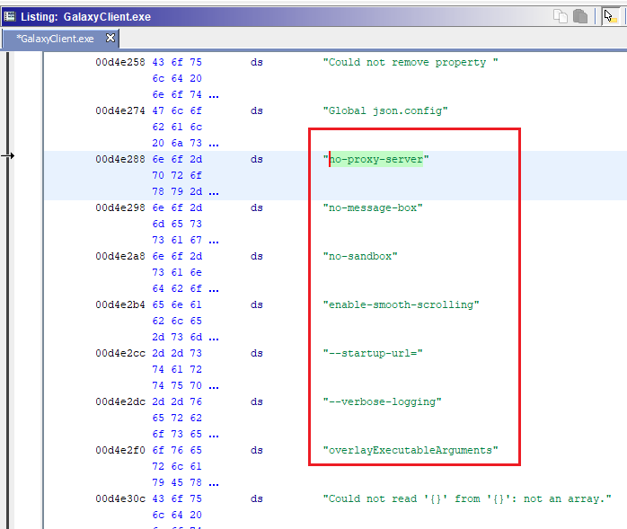
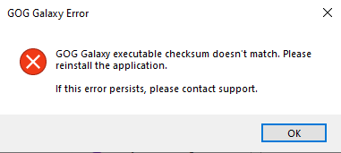
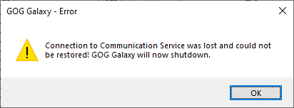
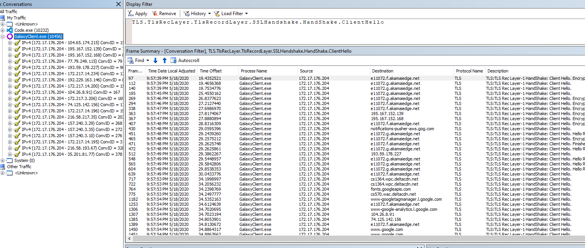
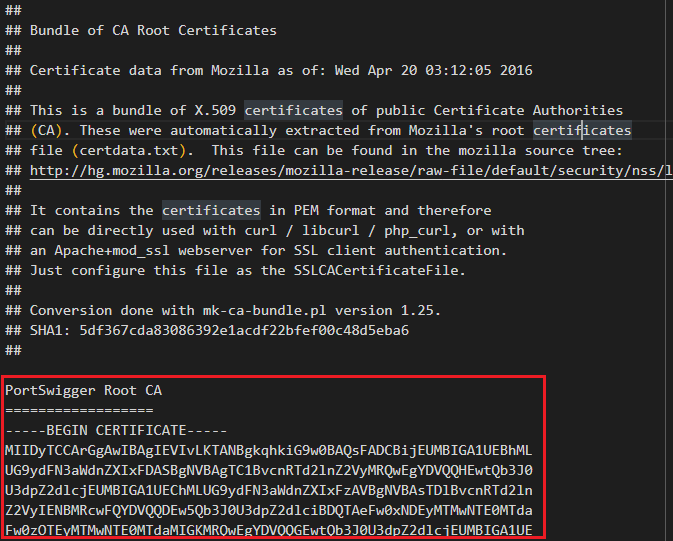
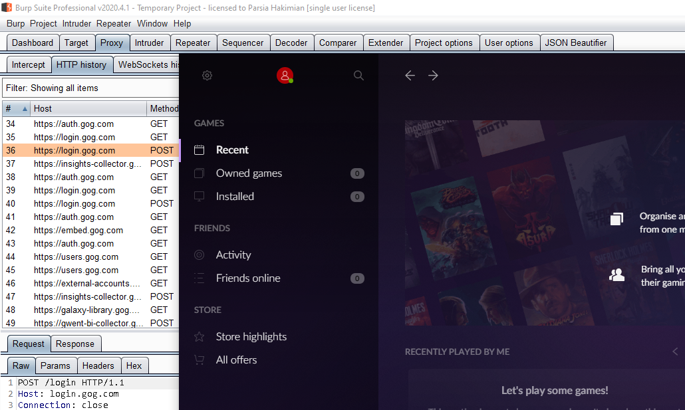

In this post we will use our knowledge from Thick Client Proxying - Part 10 - The hosts File to proxy GOG Galaxy 2. I will also introduce some automation to make our lives easier.
Setup
If you want to follow along.
- If you are not familiar with proxying using the
hostsfile, please read part 10. - Windows virtual machine.
- GOG Galaxy
2.0.15.43installed.- This blog will most likely work for other versions but this is the current version at the time of writing.
- GOG Galaxy 2 login credentials.
- Burp free or pro.
- Microsoft Network Monitor.
- Go.
Proxy Attempts
Before we take extreme measures like modifying the hosts file, we have to try
other things. First, we search and see if we can find anything. Seems like the
app does not like proxies.
CEF Applications and Windows Proxy Settings
GOG Galaxy is based on CEF. CEF stands for Chromium Embedded
Framework. It's similar to Electron but not exactly1. Definitely, harder to
reverse as we cannot just unpack the app.asar file and read the JavaScript
code.
So the first thing we try is changing the Windows proxy settings and see it works. GOG Galaxy ignores it.
Some CEF apps honor this. Like the retired Razer Comms. I found some nice
issues in it, you can read about them in
Razer Comms
Config Files
Some frameworks and applications have configuration files that allow you to
specify proxies. There are a couple of config files in
C:\ProgramData\GOG.com\Galaxy.
communication_config.json- This is probably for
C:\ProgramData\GOG.com\Galaxy\redists\GalaxyCommunication.exe
- This is probably for
config.json
Neither of them appear to have anything to do with proxying. Contents of
config.json:
{
"clientInstanceId" : "[removed]",
"lastAllProductDetailsUpdateTimeStamp" : 1589215518,
"libraryPath" : "C:\\Program Files (x86)\\GOG Galaxy\\Games",
"previewBuildsEnabled" : false,
"storagePath" : "C:\\ProgramData\\GOG.com\\Galaxy\\storage",
"supportPath" : "C:\\ProgramData\\GOG.com\\Galaxy\\support"
}Command Line Parameters
Chromium based browsers support a command line parameter named --proxy-server.
You can use it to individually proxy Chrome and Edge browsers instead of using
the Windows proxy settings.
We can start the application with this parameter:
C:\Program Files (x86)\GOG Galaxy>GalaxyClient.exe --proxy-server="http://localhost:8080"
Unfortunately, it does not work either. We can see it in the logs at2:
C:\ProgramData\GOG.com\Galaxy\logs\cef.log
This line in the logs is interesting.
[0516/100718.650:WARNING:chrome_command_line_pref_store.cc(123)]
Additional command-line proxy switches specified when --no-proxy-server was also specified.It seems like the developers have intentionally disabled proxy support. This does not work for us. Can we modify the binary and remove this command? :)
Parsia@DESKTOP-2CMT6C6 /cygdrive/c/Program Files (x86)/GOG Galaxy
$ grep -ir "proxy-server"
Binary file GalaxyClient.exe matches
Binary file GOG Galaxy Notifications Renderer.exe matches
Binary file libcef.dll matchesAnd we can see it in the binary with a hex editor or Ghidra (if you want to be fancy).
 no-proxy-server string in GalaxyClient.exeThis appears to be the global config for the application. It's the same in the other executable, too.
What if we just zero-ed out this. If we modify it directly in the hex editor, we will get a checksum error message.
 Checksum errorChecksum Error
For a few minutes I though it references the PE header checksum but then I
looked in the GalaxyInitialization.log file:
2020-05-16 12:21:42.728 [Warning][ (0)] [TID 1620][galaxy_client]:
getValidFileSignature failed during WinVerifyTrust with error -2146869232 (detail code: 2148098064).
2020-05-16 12:21:42.728 [Fatal][ (0)] [TID 1620][galaxy_client]:
Invalid client signature.I went down the road to bypass the authenticode checks. I found more checks, bypassed them but it did not work. I finally gave up. It's a pain in the neck. There must be an easier way.
The Good Old hosts File
I decided to go back to using the hosts file. It does not need patching and the application can work the way it was before. The process as described in Part 10 - The hosts File was:
- Run the app.
- Identify endpoints.
- Ping the endpoint to get its IP.
- Add the endpoint to the
hostsfile. - Add the endpoint domain and IP to Burp's
Hostname Resolution. - ???
- Rinse and repeat.
This can get tedious if you have more than a few endpoints and more importantly if you keep discovering new endpoints. I am going to share my workflow to make thing a bit easier.
GOG Galaxy Error in a Hyper-V
Running GOG Galaxy in Hyper-V (probably in some other hypervisors) results in an error. After logging in, you will see this message box pop up. If you click OK, the app will be closed. You can safely ignore it in this blog post. But this means you should run it in the host OS to be able to test all the application's functionality.
 Galaxy error in Hyper-VIdentifying Endpoints
I have talked about this a lot. I have explained the fundamentals at Network Traffic Attribution on Windows. I reviewed it and realized my techniques have only gotten more efficient but have not changed. I am not sure if this is a good thing or not.
In short, I am going to use Netmon to identify the endpoints. I will do this by
running Netmon and then the app. Because the app most likely talks to all
endpoints via TLS we will only show ClientHello packets. I will use the
Server Name Indication (SNI) extension in it to figure out which domain is
contacted.
The filter to only display ClientHellos in Netmon is:
TLS.TlsRecLayer.TlsRecordLayer.SSLHandshake.HandShake.ClientHello
Remember to click Apply after pasting the filter in Netmon. Inside the app,
login and do whatever you can. We want to hit as many endpoints as we can.
After we look in Netmon and see a lot of endpoints. Most of them are duplicates. If there were only a few endpoints we could just look for the SNI and do the rest of the steps manually. Unfortunately, we have a lot of endpoints.
 GOG Galaxy endpoints in NetmonSo what do we do? Automation. Remember Manual Work is a Bug
Introducing Extract-SNI
Extract-SNI is a small Go application that parses pcap files and extracts SNIs from it. It generates two kinds of output:
- A report that contains the information on how to get started. Some of this
includes some lines of text that should be added to
hostsfile to redirect the endpoints to the proxy. - A Burp config file that sets up
Hostname Resolutionand proxy listeners.
In other words, it does steps 3, 4, and 5 for us.
Using Extract-SNI Here
Extract-SNI works on pcap files because I could find a parser library for
Netmon cap files. pcap is also the industry standard so you can use Wireshark or
other tools.
Follow these steps:
- Filter the traffic to what we want.
- Remember that we can filter by
ProcessIDandProcessName. - E.g.,
ProcessName.Contains("galaxy").
- Remember that we can filter by
- Add the filter to only show
ClientHellos. File > Save As.- Under
Frame selectioncheckDisplayed frames. - Un-check
Record display filter in capture file. If you keep this, the first packet in the file will be the filter and Wireshark will be unable to convert it to pcap format
- Under
- Convert the
capfile topcapformat. Wireshark can do this. - Run
Extract-snion the pcap file.go run extract-sni.go C:\path\to\file.pcap -o goggalaxy
- Read
goggalaxy.html. - Copy the related section into the
hostsfile.- You need admin access to do this.
- Open Burp, load it with your default config.
- Load
goggalaxy.jsonin Burp viaProject (menu) > Project options > Load project options. - Check the Burp dashboard to see all proxy listeners have started. There should be one proxy listener on port
443. - Run the GOG application and see the traffic.
To see usage and more information please see the readme on github.
Defeating Certificate Pinning
We do all of this and run Galaxy. We see some traffic in Burp. But we cannot
login. Every time we enter our credentials we see a POST request to
https://login.gog.com/login but nothing else. And login fails with
incorrect password. We are also missing some of the domains that we saw
before.
What is the issue? Open the log file at
C:\ProgramData\GOG.com\Galaxy\logs\GalaxyClient.log and search forcertificate.
This was frustrating to troubleshoot without the log files because the error message in the UI is completely different. So the application has some sort of certificate pinning or at least it does not use the Windows certificate store to validate root CAs.
The proper way to find the file with the CAs (it also might be embedded in the
binary) was to use procmon and check the files that are accessed by the app.
However, I have had experience with other CEF apps so I just searched for
rootCA in the usual locations. Applications usually stores files in their
respective directories under these locations:
Program FilesAppdataProgramData
And I found the Mozilla root CA bundle.
C:\ProgramData\GOG.com\Galaxy\redists\rootCA.pem
We must add Burp's CA to this file. Convert it from DER to PEM and add it to the top of this file.
Why top do you ask? Well, there was this app that I was trying to proxy. It used the same type of file. I added Burp's CA to the end of this file and it did not work. A few hours of troubleshooting and I realized it was loading X certificates for this file where X was the number of certificates in the original file. So I added Burp's CA to the start of the file and it worked. Since then, it has become a habit.
 Modified rootCA.pemRe-run the app and now you can proxy it.
 GOG Galaxy 2.0 proxiedDetecting More Endpoints
Keep running Netmon even after proxying. See if there are more direct connections from the Galaxy app. These are the endpoints that were not included in the original list. We can proxy them similar to the previous ones.
For example, in my original list I did not have chat.gog.com.
Error Message Troubleshooting
I have tried to troubleshoot the error message that we ignored.. It's a
known issue because people on the forums have the same problem. At
first it looks like the Galaxy Communications service is not running. Manually
starting GalaxyCommunication results in this error in the
CommunicationServiceInitialization.log file.
2020-02-16 11:35:22.495 [Information][ (0)] [TID 5556][comm_service]: Log
started. Application version: 1.2.39.40 (2019-10-29 04:59).
2020-02-16 11:35:22.495 [Information][ (0)] [TID 5556][comm_service]: Operating
system: Windows 8 6.2 (Build 9200) (IA32)
2020-02-16 11:35:22.823 [Warning][ (0)] [TID 5556][comm_service]: SessionID is
not equal to ActiveConsoleSessionId while getting process token from process
explorer.exe, error code= 0
2020-02-16 11:35:22.823 [Warning][ (0)] [TID 5556][comm_service]: Failed getting
token for process explorer.exe, checked processes: 163.
2020-02-16 11:35:22.823 [Error][ (0)] [TID 5556][comm_service]: Failure getting
the explorer.exe token. Last error code: 0
2020-02-16 11:35:22.823 [Warning][ (0)] [TID 5556][comm_service]:
GetCurrentUserSID() failed
2020-02-16 11:35:22.823 [Information][ (0)] [TID 8368][comm_service]: [main]
Stop serving due to lack of user authorization infoSearching for the error above (sessionID is not equal) we get to this page
https://d4stiny.github.io/Local-Privilege-Escalation-on-most-Dell-computers/.
It explains how PushNotification works in Windows 10.
"For most versions of Windows 10, PushNotification will call a method called
LaunchUwpApp. LaunchUwpApp takes the following steps:
- Grab the active console session ID. This value represents the session ID for the user that is currently logged in.
- For every process named
explorer, it will check if its session ID matches the active console session ID. - If the explorer process has the same session ID, the agent will duplicate the token of the process.
- Finally, if the duplicated token is valid, the Agent will start a child
process named
SupportAssistAppWire.exe, with InheritHandles set to true. SupportAssistAppWire.exe will then create the notification."
Seems like it's a problem when using remote desktop. Which is what Hyper-V uses to connect to VMs. Looking around the internet, it seems like there is no cure. The active console session ID when using RDP is different from the session ID for explorer.exe. I am not sure why GOG Galaxy does this but it's an issue.
As I said before, just ignore this message box.